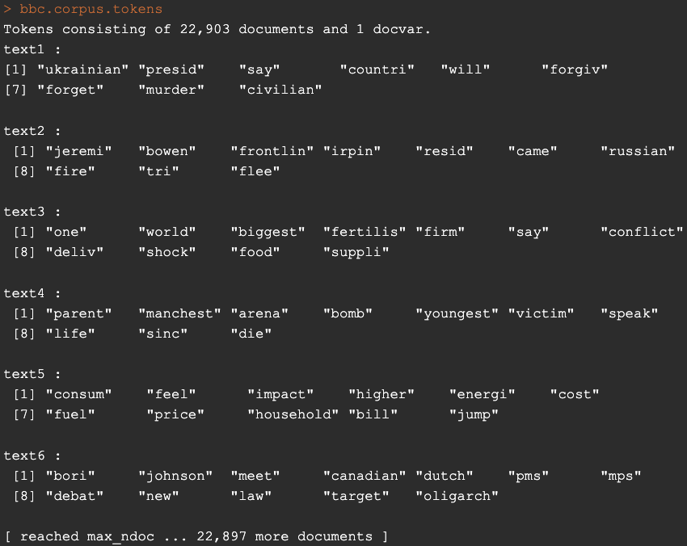
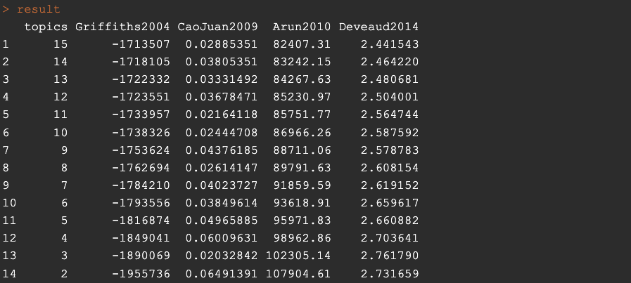
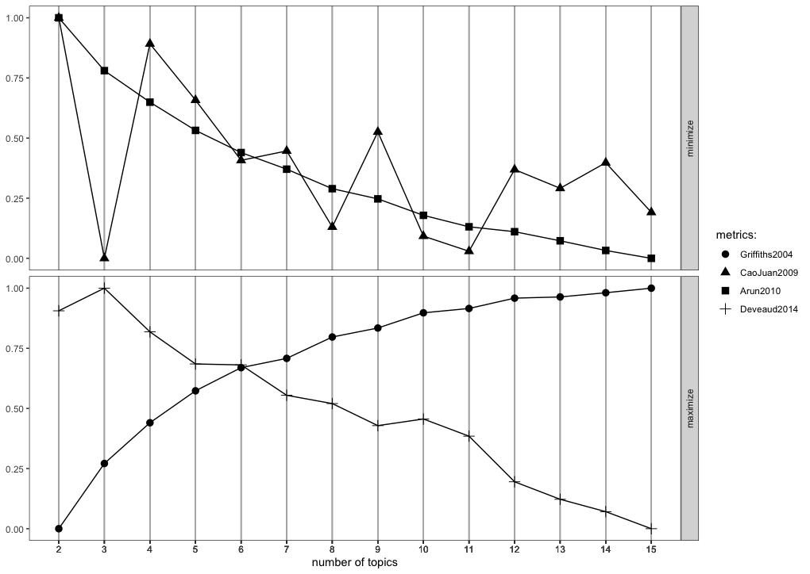
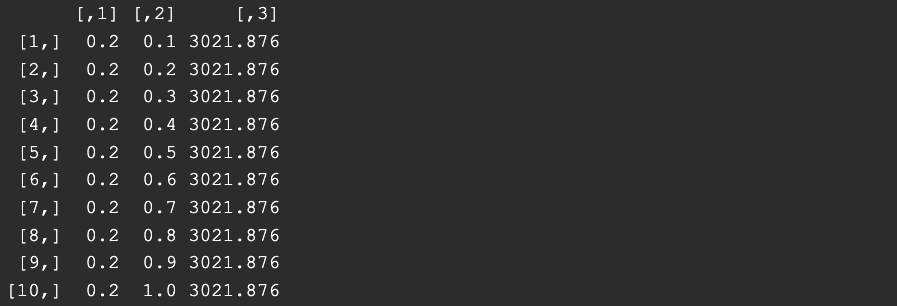
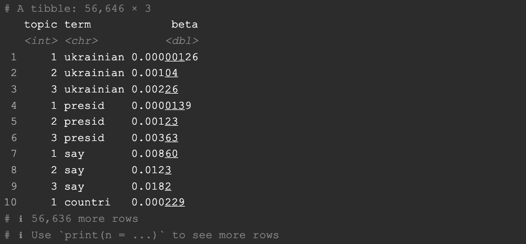
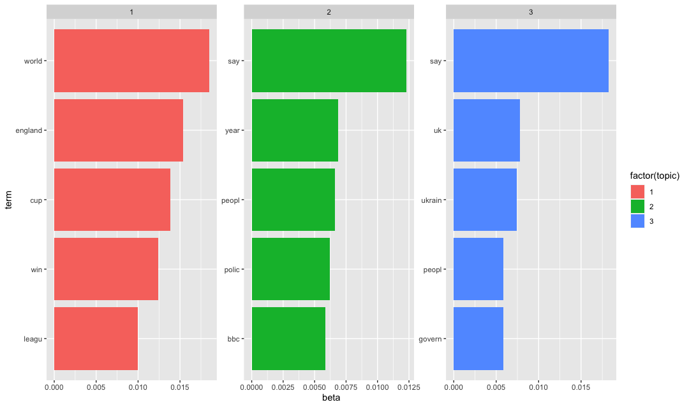
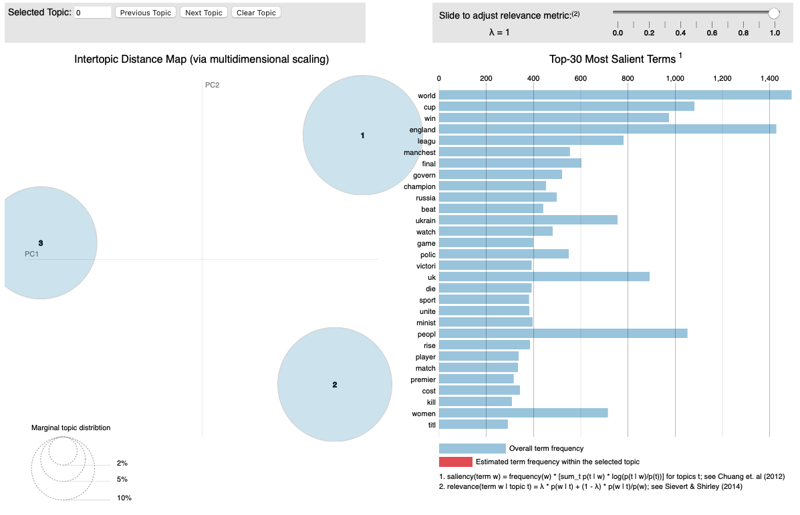

Uncovering Topics in BBC News with Latent Dirichlet Allocation in R
Welcome everyone! Keeping in mind the post about Latent Dirichlet Allocation (in case you have not read it yet and you are interested, you can read it here), I am going explore the computational part with you on a dataset containing BBC News (you can find the corresponding data here). With the assistance of R-programming language, we are going to find an optimal number of topics, in which we can cluster BBC News and tidy the archived collection of BBC News we have in our dataset.
The agenda is as follows. Initially we are going to load the required libraries in order to make this a successful journey. Later on, we are going to go through some preprocessing steps in order to make the algorithms job a little bit easier. Our third stop is going to be the model itself. We are going to go through some arguments in order to establish a common knowledge on how each of them works. The final step is going to be some exploration and commenting on our model's result.
Tools are built to be used! The libraries that we are going to use.
Just in case you are new with R-programming language, in order to install the libraries that will be presented below, you can run the following command:
install.packages("name_of_the_library")
After having installed the libraries you can load them (in order to use them) as follows:
library(tidyverse)
library(tm)
library(quarteda)
library(ldatuning)
library(LDAvis)
library(tidytext)
As you can see we are going to use:
- tidyverse library: in order to manipulate data. This library will load all the excited and Wonderfull constructed parts of this universe a.k.a. ggplot, dplyr, tidyr, purrr, stringr, etc. You can accomplish great manipulation goals by using those libraries!
- tm library: we will need this library in order to accomplish several preprocessing steps of text data. With the help of this library one can tokenize data, convert text data to a corpus and many more exciting nlp assignments. (fan fact : tm = text mining)
- quarteda library: Even though this is another library for preprocessing steps, in combination with tm library, when used correctly, your fingers can be converted to multiple nlp 🦸 superheroes!
- ldatuning library: this library will help us decide the number of topics we should look as optimal.
- LDAvis library: this library (I won't lie to you) the existence of which I found out recently on the process of topic modelling studying, provides great ways to visualise the results with the help of JSON. I advise you to go along this whole process and end up using this library alongside in order to see the possibilities that you gain by including it in your topic modelling analysis!
- tidytext library: the go-to tool that takes messy text data and turn it into a neat and usable format for analysis.
Preprocessing is always a must!
We will now move forward to the step which in my opinion is the most important in a process of model building. This step if neglected or completed recklessly, can result in a model that would not perform as expected and most certainly, would not give us back the results as expected. Anyways, in order to be able to complete this step, we need to have data to preprocess. We load the data downloaded as follows :
bbc <- read.csv('/Users/...your_path.../bbc_news.csv', stringsAsFactors = FALSE)
The data as you may have already have seen, contain the following variables:
- title : The title of the BBC News
- pubDate : Publication date
- guid : BBC News link
- link : BBC News link
- description : The description of the BBC News
bbc2 <- bbc %>%
select(title, description)
As a first toward preprocessing we are going to convert this dataset into a corpus. Corpus is a collection of data (text or audio) which are organised as dataset.
bbc.corpus <- corpus(bbc2, text_field = 'description')
Next in line are the changes that needed to be done in the given dataset. Namely, we need to tokenize that dataset. Apart from that we need to remove punctuation as the special characters do not contain and relevant information for topic indications. For the same reasons, we need to remove the numbers and of course the stopwords[1] of English language.
Following those changes we are going to stem[21] the corpus.
Finally, we are going to convert the whole corpus to lower characters. This is done so that the model will not judge same words like Legislation and legislation as two different words only for the first letter. Those steps are completed with the following commands:
bbc.corpus.tokens <- tokens(bbc.corpus, remove_punct = TRUE, remove_numbers = TRUE)
bbc.corpus.tokens <- tokens_remove(bbc.corpus.tokens, stopwords("english"))
bbc.corpus.tokens <- tokens_wordstem(bbc.corpus.tokens, language = 'english')
bbc.corpus.tokens <- tokens_tolower(bbc.corpus.tokens)
At this point your object bbc.corpus.tokens should look like this:

Finally, we are going to create a sparse document-feature matrix with the dfm function. This is needed in order for LDA function to work.
dfm_bbc <- dfm(bbc.corpus.tokens)
That is all for the preprocessing step. Before moving to the next step which the model building, I feel the need to tell you the following. NLP preprocessing depends on the context of data that you have and the goal you want to achieve. You really need to think this through. In our case, you will see some words later on like the word say or seem, that you may think it is better to remove after the first results due to the fact that those words appear in many topic groups. This may result in a more thorough view of your groups. If this is your goal, this is fine way to go. Therefore, If your goal is to make this model let's say more general and try to predict other text data with it I advise you to think it twice, which words should be removed, which should stay and what is the reason and result of such action.
LDA modeling
LDA thinking
LDA building
It is time for us to move forward to our model building. This will be completed with the help of LDA function. However LDA function has some arguments that needed to be filled. We will need x an object of class DocumentTermMatrix (a.k.a. our preprocessed data), k which is our "guess" in the number of topics that exist in the dataset containing multiple text data, method which is our selection on the method that the algorithm will use in order to compute the results and finally control where we will include a list of parameter settings to help the model work. Even though we have the help, in R-Studio IDE, I would like to elaborate the arguments a little bit more.
- k is our "guess". The reason I used quotes earlier is that, this may not be really a guess in certain cases. In one hand, we may have an idea of the bunch of documents that we would like to cluster. In the other hand we may use a tuning tool to help us choose. Either way, this is not what the term guess means. Well, of course you could really, try your luck and guess k, but after the first initiation I am sure you will see a pattern and correct your choice! 😉
- method is actually a choice between two different ways of working. In order to fill this argument we have to choose between "VEM" or "Gibbs". What are those? you may say, and which one to choose? 😵💫 Well frankly I have the answer! VEM or else Variational Expectation Maximization is an optimisation-based approach where Gibbs on the other hand is a sampling Markov Chain Monte Carlo (MCMC) approach. Both have their strength and weaknesses. For example, VEM is a deterministic method (given we provide the same data, the same output we get) whereas Gibbs is a stochastic method which means that is samples from probability distributions and can provide different results from the same data, but will eventually converge to the true distribution, given some iterations occured. I will let you search around and figure out some other facts about those two as analysing how those work, as well as all their pros and cons can be really long job and is out of this scope. But a little hint is that they converge in different speeds, as you can guess, and of course they can handle large dataset in different ways.
- control is a list of subargumets, like alpha, verbose, seed and many more where you can really tune the way LDA will work.
Of course apart from those, there are other arguments that you may want/need to tune but the least required so that we proceed are the aforementioned ones. So before running our model, I am going to search the number of topics with the help of ldatuning::FindTopicNumber() function as I indicated earlier. Initially we need to convert our dfm to an object of class DocumentTermMatrix as described earlier.
new.dtm <- convert(dfm_bbc, to = 'topicmodels')
result <- FindTopicsNumber(
new.dtm,
topics = seq(from = 2, to = 15, by = 1),
metrics = c("Griffiths2004", "CaoJuan2009", "Arun2010", "Deveaud2014"),
method = "Gibbs",
control = list(seed = 1234),
#mc.cores = 2L,
#verbose = TRUE
)
Due to the seed, this should result to the following metrics matrix:

The package ldatuning provide to us a way to visually check the results with the usage of the function FindTopicsNumber_plot:
FindTopicsNumber_plot(result)

Our goal here, as you can see is to choose K-candidate (number of topics) that either maximise the bottom or minimise the top. I am not going to go through the metrics and how they are calculated but I will leave a reference at the end if you are interested. From the results produces (mainly the plot 🫥) the best candidate is K=3. This is obtained by the CaoJuan2009 metric. I have excluded the usage of the other three due to the fact that they do not converge. Here I am aiming for results on the level of field like politics, sports etc. If you would like more detailed clustering, for example foreign policy, domestic policy, soccer, basketball, etc then I advise you to search for 20 or even higher number of topics.
Next in line is the setting of the model's hyperparameters, a.k.a. alpha and beta. Please recall the intuition behind those two hyperparameters in order to fully understand the meaning of the results. In order to find an optimal setting, one could work with 3 or more ways.
- Use the perplexity of topic modelling LDA model.
- Use the coherence measure of topic modelling LDA model.
- Use intuition about the documents.
The last of the options is when the researcher has a brief idea about the documents, the level of vocabulary details, and the variance of words per document and topics. Even in this case, the researcher would have to try a few of the settings in order to find the optimum. Here I am going to work with the first two options. Before getting there though, I would like to give a rough definition for both notions of perplexity and topic coherence.
- Perplexity : In LDA topic modeling context, perplexity measures of how well an LDA model works in other words how generalised is the computed process. This is measured by the notion of how well a model can predict a new set of documents' topics based on what it learnerd from a training set. Lower perplexity means the model is better at making predictions.
- Coherence : Topic coherence is a measure that helps assess how easy it is to understand the topics created by the model computed. This measures if the words in a topic are semantically related to each other. If the coherence score is high, it means the topics are more understandable and therefore our LDA model is a fine tuned model.
Perplexity and Coherence have their pros and cons. Here we are going to use perplexity to continue. Coherence is not hard to be computed though (hint use topic_coherence of package topicdoc). Here for the perplexity, I have decided to create two vectors with some of possible values of alpha and beta and then compute all the perplexity values for a set of test data. The computations and results are the following
alpha_values <- seq(from =0.1,to = 1, by = 0.1)
alpha_values
beta_values <- seq(from =0.1,to = 1, by = 0.1)
beta_values
n <- length(alpha_values)
result_matrix <- matrix(0, n * n, 3)
row_num <- 1
for (i in 1:n) {
for (j in 1:n) {
result_matrix[row_num, 1] <- alpha_values[i]
result_matrix[row_num, 2] <- beta_values[j]
m <- LDA(train_dtm, k=3, method = 'Gibbs', control = list(alpha = alpha_values[i], seed = 1234), beta = beta_values[j])
perp.value <- perplexity(m, test_dtm)
result_matrix[row_num, 3] <- perp.value
row_num <- row_num + 1
}
}
In order to get the rows with the minimum perplexity value we have to run the following:
result_matrix[result_matrix[,3] == min(result_matrix[,3]),]

We see here the setting for hyperparameter alpha is 0.2 whereas for beta according to perplexity measure it makes no difference. Recall the meaning of them and try to understand what 0.2 means.
As a result, we are ready to build our model according to those settings and proceed to the final act of this article where we will review the results of it.
Model Building
After having gathered all the information needed and went through all required preprocessing step it is time to build the model. This is done with the help of LDA function of package topicmodels.
model.lda <- LDA(new.dtm, k = 3, method = "Gibbs", control = list(alpha = 0.2, seed = 1234))
From this point and on, you can check many very interesting statistics like the per-topic-per-word probability
news.topics <- tidy(m_final, matrix = 'beta')
where you can see what is the probability of each word belonging to a topic:

or the top terms per topic in order to draw conclusions on the actual humanly communicated context of topic
top.terms <- news.topics %>%
group_by(topic) %>%
top_n(5) %>%
ungroup() %>%
arrange(topic, -beta)
top.terms %>%
mutate(term = reorder(term, beta)) %>%
ggplot(aes(term, beta, fill = factor(topic))) +
geom_col(show.legend = TRUE) +
facet_wrap(~ topic, scales = 'free') +
coord_flip()

You can see here the word say that I mentioned in the beginning... 😉 Here we can get an idea about each topic that the model clustered our BBC news data. I would say, a topic about sports, a topic about news related to Ukraine, and a topic of domestic (UK) news. Finally I would like you to copy paste this final part of chunk, and check out the result!
new.dtm.2 <- new.dtm[slam::row_sums(new.dtm) > 0, ]
phi <- as.matrix(posterior(m_final)$terms)
theta <- as.matrix(posterior(m_final)$topics)
vocab <- colnames(phi)
doc.length <- slam::row_sums(new.dtm)
term.freq <- slam::col_sums(new.dtm)[match(vocab, colnames(new.dtm))]
json <- createJSON(phi = phi, theta = theta, vocab = vocab, doc.length = doc.length, term.frequency = term.freq)
serVis(json)

This chunk will create an interactive app as the following where you can explore the capabilities available there. You can check out all the words that are included in every topic.
Overall, I believe that you have a good idea and all the tools to start exploring LDA yourself. I hope you've enjoyed the implementation presented here. Feel free to copy paste any part of the code, insert your data and explore nlp world from a different perspective.
Be safe, code safer!
Subscribe to Kavour
Get the latest posts delivered right to your inbox